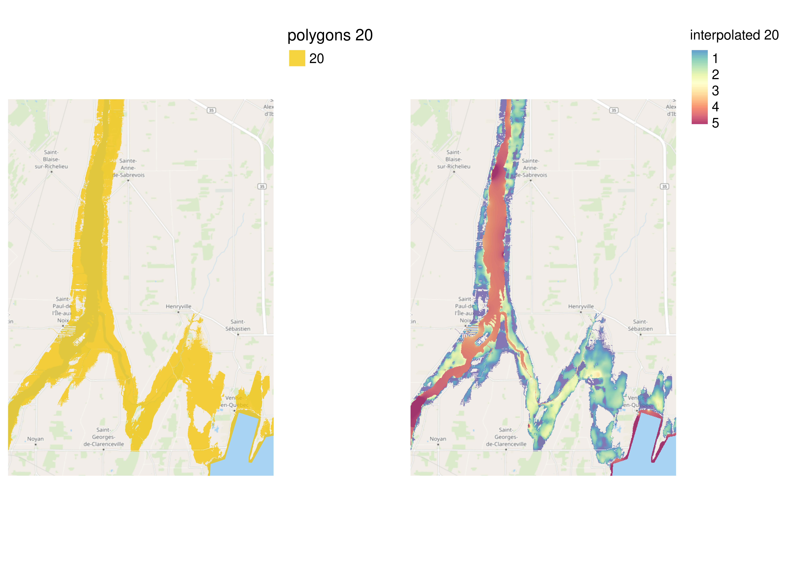
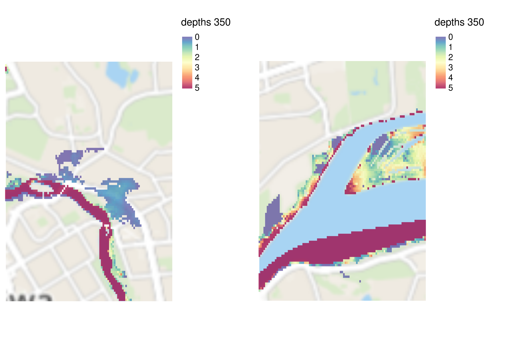

CANADA FLUVIAL DEPTH INTERPOLATION
2023-07-12
1 Issues with fluvial flood depth interpolation in Canada
- Not a complete floodplain
No immediate solution. We could either run a fluvial flood model or a machine learning model e.g. random forest with FEMA in USA.
- Varying return intervals modeled across provinces/municipalities
Solutions
- Estimating probability weighted flood depths for ratings. For an area with return intervals 20 and 100 year with depths 1ft and 2ft we have annual 5% and 1% chance of flooding:
\(depth = \frac{P(RP_1)*Depth_1 + P(RP_2)*Depth_2....P(RP_k)*Depth_k}{\Sigma_{i=1}^k P(RP_i)}\)
Where \(k\) is the number of return periods for an area, which gives us the following for this example:
\(1.17 = \frac{5*1 + 1*2}{6}\)
- Communicating the depth with associated return period.
2 City Examples
2.1 Montreal N45W074
N45W074 return period 20 year with 4 polygons
This is the result of the interpolation. We only interpolate for flood polygons–not surface water. 
N45W074 return period 100 year with 8 polygons
This is the result of the interpolation. We only interpolate for flood polygons–not surface water.
Zoomed in maps


2.2 Calgary N51W115
N51W115 return period 10 year with 5 polygons
This is the result of the interpolation. We only interpolate for flood polygons–not surface water.

N51W115 return period 100 year with 35 polygons


This is the result of the interpolation. We only interpolate for flood polygons–not surface water.


Zoomed in maps


2.3 Ottawa N45W076
N45W076 return period 20 year with 4 polygons
This is the result of the interpolation. We only interpolate for flood polygons–not surface water.

N45W076 return period 50 year with 70 polygons
This is the result of the interpolation. We only interpolate for flood polygons–not surface water.

N45W076 return period 100 year with 132 polygons
This is the result of the interpolation. We only interpolate for flood polygons–not surface water.

N45W076 return period 350 year with 229 polygons


This is the result of the interpolation. We only interpolate for flood polygons–not surface water.


Zoomed in maps



2.4 Toronto N43W080
N43W080 return period 100 year with 93 polygons

This is the result of the interpolation. We only interpolate for flood polygons–not surface water.

Zoomed in maps


2.5 Vancouver N49W123
N49W123 return period 200 year with 1 polygons
This is the result of the interpolation. We only interpolate for flood polygons–not surface water.
N49W123 return period 500 year with 13 polygons


This is the result of the interpolation. We only interpolate for flood polygons–not surface water.


Zoomed in maps